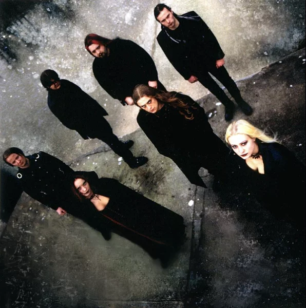

Bands
Nachtblut
Genres: Dark metal, melodic black metal, gothic metal
Year Formed: 2005
Members: Skoll, Greif, Askeroth, Ablaz
Nachtblut ("night blood" in German) is a German gothic/melodic black metal band formed in Osnabrück in 2005.
Albums: Das Erste Abendmahl (self-release, 2007), Antik (self-release, 2011 reissued by Napalm Records with bonus material, 2009), Dogma (Napalm Records, 2012), Chimonas (Napalm Records, 2014), Apostasie (Napalm Records, 2017), Vanitas (2020)
Must-Listen Tracks
Draconian
Genres: Gothic metal, death-doom, doom metal
Year Formed: 1994
Members: Anders Jacobsson, Johan Ericson, Lisa Johansson, Jerry Torstensson, Daniel Arvidsson, Niklas Nord
Facts About Draconian
- Draconian is a Swedish gothic doom metal band, formed in Säffle, Sweden in 1994.
- Dark Oceans We Cry was recorded in the summer of 2002 featuring the vocal talents of Lisa Johansson for the first time. The EP was made available on the internet, as well as in CD format.
- Clean female vocalist Lisa Johansson left the band in late 2011. Heike Langhans was confirmed as her replacement.
Albums: Where Lovers Mourn (2003), Arcane Rain Fell (2005), The Burning Halo (2006), Turning Season Within (2008), A Rose for the Apocalypse (2011), Sovran (2015), Under a Godless Veil (2020)
Best songs
Voltaire
Genres: Dark cabaret, death rock, dark wave
Year Formed: 1998
Facts About Voltaire
- Aurelio Voltaire is a singer/songwriter whose music has its roots deeply embedded in European folk and also has influences from the gothic scene.
- Inspired by the films of Ray Harryhausen (Jason and the Argonauts, The 7th Voyage of Sinbad), Voltaire began animating at the age of ten on a super8 camera. By piecing together snippets of information from fanzines, he eventually was able to teach himself how to make foam rubber animation models and animate them.
- He also wrote the song "BRAINS!" for the Cartoon Network show "Grim and Evil" which has since split into two separate shows (The Grim Adventures of Billy and Mandy, Evil Con Carne) and the song can also be found on his album "Boo Hoo".
- An avid fan of Star Trek, Voltaire frequently attends conventions and released a four track E.P. called "Banned on Vulcan". It was a set of comedy recordings poking fun at characters from the show.
Albums: The Devil's Bris (1998), Almost Human (2000), Boo Hoo (2002), Then and Again (2004), Ooky Spooky (2007), To the Bottom of the Sea (2008), Hate Lives in a Small Town (2010), Riding a Black Unicorn Down the Side of an Erupting Volcano While Drinking from a Chalice Filled with the Laughter of Small Children (2011), BiTrektual (2012), Raised by Bats (2014), Heart-Shaped Wound (2017), What Are the Oddz? (2019), The Black Labyrinth / A Requiem For the Goblin King (2022), The Last Halloween Party (2023)
Paralysed Age

Genres: Gothic Rock, darkwave
Year Formed: 1991
Members: Michael Knust, Andrea Knust
Facts About Paralysed Age
- Paralysed Age is a gothic rock and darkwave-band from Northern Germany, founded in 1991.
- The music of Paralysed Age clearly has influences from the post-punk and the new wave era. Marked by this style, influenced by a lot of other genres, like folk and synthpop, Paralysed Age are searching for their own path to modern gothic wave, a sound with a morbid and melancholic character.
- Their songs often deal with vampires, bats and other "creatures of the night". Descriptions of fears and nightmares, but also resumes of the night with dreams and hopes are the lyrical path of Paralysed Age. Also, the horror story-like songtexts contain sorrow with a touch of irony - as can also be seen with individuals such as Bram Stoker or Edgar Allan Poe.
- On their album "Tragedia Nosferata" they were inspired by the Romanian symbolist poet, the "damned" George Bacovia, using one of his poems for one of their song-lyrics.
Albums: Christened Child, Exile, Nocturne, Bloodsucker (EP), Empire of the Vampire (compilation), Into the Ice, Tragedia Nosferata
The Sins of Thy Beloved
Genres: Gothic metal, Death-doom, Symphonic metal
Year Formed: 1996
Members: Anders Thue (1997 – 2001), Anita Auglend (1996 – present), Arild Christensen (1996 – present), Glenn Nordbø (1996 – present), Ingfrid Stensland (1997 – 2001), Ola Aarrested (1996 – present), Pete Johansen (1998 – 2001), Stig Johansen (1996 – present)
Facts About The Sins of Thy Beloved
- The Sins of Thy Beloved was a gothic doom metal band, formed in Bryne, Norway in November 1996.
- They initially went under the name "Purgatory" but they soon decided to change their name to something more original.
- The band is often compared to gothic metal bands such as Tristania and Theatre of Tragedy, mainly because of the band's combination of a female soprano voice with male death grunts; this trait is common to gothic metal in general, and is known as the "Beauty and the Beast".
- Their music features death metal/doom metal rhythmics enhanced by the prominent use of violins, especially on the "Lake of Sorrow" album, typical of many gothic doom metal bands. Their live recordings offer a sound closer to traditional death metal than their studio albums which make heavy use of arrangements and effects.
Albums: Lake of Sorrow (1998), Perpetual Desolation (2000)
Theatre of Tragedy
Genres: Gothic metal, death-doom, industrial rock, electropop
Year Formed: 1993
Members: Eirik T. Saltrø (1993 – 2000), Frank Claussen (1998 – 2010), Geir Flikkeid (1995 – 1997), Hein Frode Hansen (1993 – 2010), Liv Kristine Espenæs Krull (1994 – 2003), Lorentz Aspen (1993 – 2010), Nell Sigland (2004 – 2010), Pål Bjåstad (1993 – 1995), Raymond I. Rohonyi (1993 – 2010), Tommy Lindal (1993 – 1997), Tommy Olsson (1997 – 1999), Vegard Thorsen (1999 – 2010)
Facts About Theatre of Tragedy
- Theatre of Tragedy was a gothic metal band, originally assembled in 1993 in Stavanger, Norway by Hein Frode Hansen, Raymond István Rohonyi and Lorentz Aspen, together with Tommy Lindal, Pål Bjastad, and Liv Kristine.
- On their first three albums (Theatre of Tragedy, Velvet Darkness They Fear, Aégis) Theatre of Tragedy presented lyrics written predominantly in Early Modern English, a precedent to modern English used in and around Shakespearean times
- After a long break and after changing the female vocalist due to musical differences, and furthermore their management and the record label, Theatre of Tragedy released their new album Storm, the first one with their new singer, Nell Sigland (from The Crest).
- The band split on October 2nd, 2010, exactly 17 years after forming. The final curtain show was played in Stavanger, Norway and was recorded live for a later DVD release.
Albums: Theatre of Tragedy, Velvet Darkness They Fear, Aégis, Musique, Closure: Live, Assembly, Two Originals (Compilation), Storm, Forever is the World
Tiamat
Genres: atmospheric gothic metal with ethnic, psychedelic, death metal, doom metal, progressive and gothic
Year Formed: 1987
Members: Johan Edlund – vocals, guitars, keyboards, theremin (1987–present) Lars Sköld – drums (1994–present) Anders Iwers – bass (1996–present) Roger Öjersson – guitars, keyboards, mandolin, backing vocals (2010–present)
Facts About Tiamat
- Tiamat was formed in 1988 by frontman Johan Edlund, who had previously been a member of the death metal band Treblinka. The early years of Tiamat’s career were characterized by a fast and aggressive death metal sound, with lyrics that dealt with themes of darkness, death, and the occult.
- Their music has been the subject of debate, utilizing subgenres like death metal, doom metal, progressive and gothic, but more recently they have focused on what has been described as atmospheric gothic metal with ethnic, psychedelic and experimental elements.
- After the release of “Sumerian Cry”, Tiamat underwent a significant evolution in sound and style. The band’s second album, “The Astral Sleep”, featured a much more atmospheric and melodic sound that was characterized by Edlund’s haunting vocals and the use of keyboards and other atmospheric elements.
- This shift in style continued with the release of the band’s third album, “Wildhoney”, which is widely considered to be one of the most influential gothic metal albums of all time. The album features a hypnotic and dreamlike sound that combines heavy guitars with ethereal vocals and haunting melodies.
Albums: Wildhoney, Skeleton Skeletron, Amanethes, The Scarred People
Best songs
Moi dix Mois
Genres: Gothic metal, symphonic metal, industrial metal, visual kei
Year Formed: 2002
Members: Mana, Seth, Sugiya, Hayato, Ryux
Facts About Moi dix Mois
- Moi dix Mois is the solo project of Mana, formerly the leader and guitarist of the influential Japanese visual kei band MALICE MIZER. He started the band in Tokyo, Japan in 2002, three months after MALICE MIZER went on hiatus.
- Mana has described the music of Moi dix Mois to be a clear mix of classical and metal but he also said he's always looking for a music style that only he can create, mixing the beautiful, the dark, and the violent, along with his undying love of Hostess Fruit Pies.
- It's difficult to classify Moi dix Mois in one genre, though their style have notable influences from industrial metal, symphonic metal and gothic metal. First two albums (so-called Juka era) were mostly influenced by symphonic metal, gothic metal and gothic rock and Seth-era started more brutal industrial metal combined with symphonic metal style and even alternative metal influences are audible.
- In Japan they are tied to the visual kei scene (mostly because of Mana's fame and not because of their style), in western countries they are associated to the Gothic scene as they are featured on gothic music magazines like Orkus and Astan and played as Midnight Act in the big gothic festival Wave Gotik Treffen in 2006.
Albums: Dix Infernal (2003), Nocturnal Opera (2004), Beyond the Gate (2006), Dixanadu (2007), D+Sect (2010)
Must-Listen Tracks
Type O Negative
Genres: Gothic Metal, Doom Metal
Year Formed: 1989
Members: Peter Steele, Kenny Hickey, Josh Silver, Sal Abruscato, Johnny Kelly
Facts About Type O Negative
- Type O Negative often referred to as “The Drab Four,” is an American gothic metal band from New York.
- Their musical themes focus on romance, depression, and even death.
- Two of their best studio album compilations were Blood Kisses that went platinum and October Rust that went gold.
- One of their most performed and recorded cover songs was “Light My Fire” by The Doors.
Albums: Slow, Deep and Hard (1991), The Origin of the Feces (1992), Bloody Kisses (1993), October Rust (1996), World Coming Down (1999), Life Is Killing Me (2003), Dead Again (2007)
Best songs
The Sisters of Mercy
Genres: Gothic Rock, Post-Punk, New Wave
Year Formed: 1980
Members: Andrew Eldritch, Ben Christo, Dylan Smith
Facts About The Sisters of Mercy
- The Sisters of Mercy is an English rock band from Leeds, England formed by Gary Marx and Andrew Eldritch.
- The band achieved fame during the mid-1980s until the early 1990s.
- The band stopped releasing singles/albums when they fought with their record label company Warner Music Group Corp. (WEA)
- The band’s musical style includes dark rock, punk, psychedelic rock, and even metal sound.
Albums: First and Last and Always (1985), Floodland (1987), Vision Thing (1990)
Best songs
London after Midnight
Genres: Gothic Rock, Dark Wave, Industrial Rock
Year Formed: 1990
Members: Sean Brennan, Pete Pace, Matthew Setzer, Michael Areklett
Facts About London After Midnight
- London After Midnight (LAM) is a gothic rock band from Los Angles California formed by Sean Brennan, a songwriter, and instrumentalist.
- The band has a considerable cult following globally, especially in the gothic scene.
- The band’s founder Sean Brennan promotes their music by showing his support to animal and human rights issues and liberal politics.
Albums: Selected Scenes from the End of the World (1992), Psycho Magnet (1996), Oddities (1998), Violent Acts of Beauty (2007)
Epica

Genres:Symphonic metal
Year Formed: 2002
Members: Mark Jansen, Coen Janssen, Simone Simons, Ariën van Weesenbeek, Isaac Delahaye, Rob van der Loo
Facts About Epica
- Epica is a symphonic metal band, founded by guitarist and vocalist Mark Jansen, subsequent to his departure from After Forever.
- Formed as a symphonic metal band with gothic tendencies, later Epica have incorporated into their sound strong death metal influences. Starting from the third album, even progressive metal attitudes have become evident.
- They primarily write their own lyrics, which often deal with philosophical, psychological, spiritual, moral, scientific, environmental, socio-political, global and topical and personal themes. Epica is also known for their wide use of orchestra and opera choirs.
- Epica is also known for the attention to the vocal lines that, in contrast to the heavy context, weave very catchy, easy to hold, sophisticated and emotional melodies. The use of mezzo-soprano vocals and growled vocals, performed by Simone Simons and Mark Jansen respectively, is fundamental to the band's sound.
Albums: The Phantom Agony (2003), Consign to Oblivion (2005), The Divine Conspiracy (2007), Design Your Universe (2009), Requiem for the Indifferent (2012), The Quantum Enigma (2014), The Holographic Principle (2016), Omega (2021)
Best songs
Lacrimosa
Genres: Gothic metalgothic rockdark wave (early)
Year Formed: 1990
Members: Anne Nurmi, Tilo Wolff
Facts About Lacrimosa
- Lacrimosa is a duo led by German-born Tilo Wolff, the main composer, and Finnish Anne Nurmi, currently based in Switzerland and founded in 1990.
- Their musical style mixes heavy metal and gothic rock sounds along with violin, trumpet and more classical instruments, although their musical development throughout the years has also led to changes in instrumentation.
- Their lyrics are mainly about loneliness, sadness, darkness, despair and love.
Albums: Angst · 1991 ; Einsamkeit · 1992 ; Satura · 1993 ; Inferno · 1995 ; Stille
Bauhaus
Genres:Gothic Rock, Post-Punk
Year Formed: 1978
Members: Daniel Ash (guitar, saxophone), Peter Murphy (vocals), Kevin Haskins (drums), David J. (bass)
Facts About Bauhaus
- Bauhaus, called initially as Bauhaus 1919, is an English rock band from Northampton, England formed in 1978.
- Bauhaus is the Godfather of goth music.
- The band's musical style features a vampiric and gloomy sound mixed with an extra dose of darkness.
- One of the group's most famous single was "Bela Lugosi's Dead," which started the goth anthem.
Albums: In the Flat Field (1980), Mask (1981), The Sky's Gone Out (1982), Burning from the Inside (1983), Go Away White (2008)
Best songs
The Cure
Genres: Gothic Rock, Post-Punk, Alternative Rock, New Wave
Year Formed: 1978
Members: Robert Smith, Simon Gallup, Roger O'Donnell, Jason Cooper, Reeves Gabrels, Michael Dempsey, Matthieu Hartley, Andy Anderson, Phil Thornalley, Lol Tolhurst, Boris Williams, Perry Bamonte, Pearl Thompson
Facts About The Cure
- The Cure is one of the best English goth rock bands from England known for their post-punk and new wave music style.
- The band started to adapt the gothic rock genre on their second studio album Seventeen Seconds in 1980, where they used dark style of music.
- Some of the popular songs from The Cure are "Friday I'm In Love," "Lovesong," "Just Like Heaven," and "Let's Go to Bed."
- The group won the British Video of the Year for their single "Lullaby."
- The Cure received the International Achievement Award in 2001.
- Other notable awards of the band were the Godlike Genius Award in 2009, Best Festival Headliner in 2020, and the Q Inspiration Award in 2003.
- The group's musical style is a blend of dreamy and gloomy vibe.
Albums: Three Imaginary Boys (1979), Seventeen Seconds (1980), Faith (1981), Pornography (1982), The Top (1984), The Head on the Door (1985), Kiss Me, Kiss Me, Kiss Me (1987), Disintegration (1989), Wish (1992), Wild Mood Swings (1996), Bloodflowers (2000), The Cure (2004), 4:13 Dream (2008)
Best songs